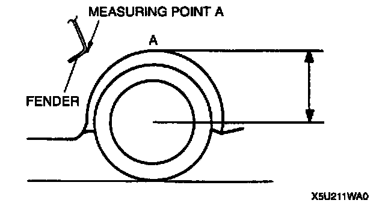

Pre-Alignment Inspection
WHEEL ALIGNMENT PREINSPECTION1. Inspect the tire inflations, and adjust to the recommended pressure as necessary.
2. Inspect the front wheel bearing play and correct as necessary.
3. Inspect the wheel and tire runouts.
4. Inspect the ball joints and steering linkage for excessive looseness.
5. The vehicle must be on level ground and carry no luggage or passengers.

6. Measure the height from the center of the wheel to the fender brim. The difference between left and right measurement must not exceed 10 mm (0.39 inch).